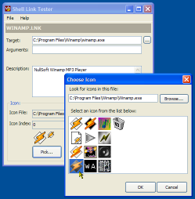

ShellLink Code (59K)
ShellLink Code (59K)
 8 Mar 2003
8 Mar 2003
First Posted
 Auto-File and URL Completion for Text Boxes and Combo Boxes
Auto-File and URL Completion for Text Boxes and Combo Boxes
 Getting File Icons Using The Shell
Getting File Icons Using The Shell

Creating and Modifying Shortcuts
Use COM Interop for complete control
This article provides a .NET class wrapper around the ShellLink object which enables you to read, create and modify Shortcuts under any version of Windows. As a bonus, you also get an Icon Picker implementation which demonstrates how to extract all the Windows icon resources from any executable or DLL file in small or large sizes.
Using the ShellLink Class
A shortcut in Windows has a number of properties, most of which are optional:
- The shortcut's Target
This is the file or Shell object to launch when the shortcut is opened and is the only required property. - The icon to display
There are two ways to specify the icon. Firstly, if nothing is specified, Windows display's the target's default icon. Otherwise, you can specify either a .ICO file or the index of an icon resource within a Windows EXE or DLL. - Target Arguments
Any arguments are passed to the target when it is started, for example, a Shortcut could have a target of Notepad.exe and a arguments containing a file to open. - Working Directory
The directory to change to for the any new process started using the shortcut. - Shortcut Description
The description can be displayed in the Comments column of Explorer's Details view or as an InfoTip when the user hovers over the shortcut. - Open State
This specifies whether to open the object in a normal, minimised or maximised Window. - Hot Key
Specifies a key combination which will open the shortcut from anywhere in Windows. This is typically used with icons on the desktop.
The ShellLink object provided with the download provides a straightforward wrapper around these properties. Once you've created an instance of the object, you can use the Open method to read an existing shortcut if you want to modify one. The Target, IconPath and IconIndex, Arguments, WorkingDirectory, Description, DisplayMode and HotKey properties then provide read/write access to the shortcut's details. To get the small or large icon associated with the shortcut, use the SmallIcon and LargeIcon and properties. Finally, the Save method allows the shortcut to be, erm, saved.
If you try the sample, you'll see it also provides a .NET version of the Windows Change Icon dialog. Rather than use the undocumented Shell export to call the built in Windows dialog, this has been implemented from scratch, and includes code demonstrating how to extract large and small Win32 icon resources from executables, libraries and icon files as well as building a multi-column icon ListBox.
In Detail
The ShellLink object is currently only available from the Shell using a COM object. This involves the following objects:
- IPersistFile
This interface is used for reading and saving shortcuts to files (note that it in turn implements the otherwise fairly useless IPersist interface. - IShellLink
This interface provides all of the methods for accessing a Shell Link's properties and a helper method for reading shortcut files. Note that there are two versions of this interface: an ANSI one for Win9x systems and a Unicode one for NT and above. - ShellLink
This class, provided by the Shell, provides the concrete implementation of the IShellLink and IPersistFile interfaces.
I'll cover how to create the Interop for each of these objects first, then move onto using these in a real class.
1. Implementing the ShellLink Interfaces
The first step in implementing a ShellLink object is therefore to provide COM Interop structures for each of the interfaces. Whilst the code itself provides versions for both the ANSI and Unicode interfaces, here I'll concentrate on the Unicode interface.
1.1 IShellLink Interface
You will find the definition of the IShellLink interface as IDL in the Platform SDK file ShObjIdl.idl. Unsurprisingly, IDL is fairly closely related to the language you use to describe COM Interop Interfaces in .NET, so you simply start by pasting the whole lot directly in. Then you need to modify it a little and start "decorating" the code with attributes. (Well, the documentation describes it as decoration; if your idea of decoration is to drop a large pile of rubbish in every corner of the room then its about right). In general these tips help greatly in the translation:
- Pass structures as ref
- The [in, out] IDL specification is equivalent to ref for a parameter. There is no direct equivalent to [in] - just remove it and make sure you don't specify out or ref.
- Strings that are passed to an interface typically require their type to be specified using the MarshalAs attribute. For Unicode strings, use the LPWStr type, for ANSI use LPStr and for automatic platform-dependent types use LPTStr.
- Strings returned to an interface should be passed as StringBuilder objects. Use the Out() attribute to specify that the data is returned and the MarshalAs attribute to specifying the correct string type (again, this is generally LPWStr for Unicode, LPStr for ANSI or LPTStr for an auto- platform dependent string type). The StringBuilder will need to be initialised to an appropriate size prior to calling the interface's method.
- Use the IntPtr type for handles and pointers.
- COM methods always return a HRESULT which includes both the result of the method and any error code. If you want to be able to read the HRESULT then use the PreserveSig attribute on the method and declare it as a function with result type as int or uint, otherwise declare the method as void.
[ComImportAttribute()]
[GuidAttribute("000214F9-0000-0000-C000-000000000046")]
[InterfaceTypeAttribute(ComInterfaceType.InterfaceIsIUnknown)]
private interface IShellLinkW
{
//[helpstring("Retrieves the path and filename of
// a shell link object")]
void GetPath(
[Out(), MarshalAs(UnmanagedType.LPWStr)]
StringBuilder pszFile,
int cchMaxPath,
ref _WIN32_FIND_DATAW pfd,
uint fFlags);
//[helpstring("Retrieves the list of shell link
// item identifiers")]
void GetIDList(out IntPtr ppidl);
//[helpstring("Sets the list of shell link
// item identifiers")]
void SetIDList(IntPtr pidl);
//[helpstring("Retrieves the shell link
// description string")]
void GetDescription(
[Out(), MarshalAs(UnmanagedType.LPWStr)]
StringBuilder pszFile,
int cchMaxName);
//[helpstring("Sets the shell link description string")]
void SetDescription(
[MarshalAs(UnmanagedType.LPWStr)] string pszName);
//[helpstring("Retrieves the name of the shell link
// working directory")]
void GetWorkingDirectory(
[Out(), MarshalAs(UnmanagedType.LPWStr)]
StringBuilder pszDir,
int cchMaxPath);
//[helpstring("Sets the name of the shell link
// working directory")]
void SetWorkingDirectory(
[MarshalAs(UnmanagedType.LPWStr)] string pszDir);
//[helpstring("Retrieves the shell link
// command-line arguments")]
void GetArguments(
[Out(), MarshalAs(UnmanagedType.LPWStr)]
StringBuilder pszArgs,
int cchMaxPath);
//[helpstring("Sets the shell link command-line
// arguments")]
void SetArguments(
[MarshalAs(UnmanagedType.LPWStr)] string pszArgs);
//[propget, helpstring("Retrieves or sets the
// shell link hot key")]
void GetHotkey(out short pwHotkey);
//[propput, helpstring("Retrieves or sets the
// shell link hot key")]
void SetHotkey(short pwHotkey);
//[propget, helpstring("Retrieves or sets the shell
// link show command")]
void GetShowCmd(out uint piShowCmd);
//[propput, helpstring("Retrieves or sets the shell
// link show command")]
void SetShowCmd(uint piShowCmd);
//[helpstring("Retrieves the location (path and index)
// of the shell link icon")]
void GetIconLocation(
[Out(), MarshalAs(UnmanagedType.LPWStr)]
StringBuilder pszIconPath,
int cchIconPath,
out int piIcon);
//[helpstring("Sets the location (path and index)
// of the shell link icon")]
void SetIconLocation(
[MarshalAs(UnmanagedType.LPWStr)] string pszIconPath,
int iIcon);
//[helpstring("Sets the shell link relative path")]
void SetRelativePath(
[MarshalAs(UnmanagedType.LPWStr)]
string pszPathRel,
uint dwReserved);
//[helpstring("Resolves a shell link. The system
// searches for the shell link object and updates
// the shell link path and its list of
// identifiers (if necessary)")]
void Resolve(
IntPtr hWnd,
uint fFlags);
//[helpstring("Sets the shell link path and filename")]
void SetPath(
[MarshalAs(UnmanagedType.LPWStr)]
string pszFile);
}
1.2 CShellLink
The concrete Shell Link object can be found in the ShlGuid.h file of the Platform SDK. Search for CLSID_ShellLink to find it.
[GuidAttribute("00021401-0000-0000-C000-000000000046")]
[ClassInterfaceAttribute(ClassInterfaceType.None)]
[ComImportAttribute()]
private class CShellLink{}
1.3 Structures Used by IShellLink
The GetPath method of IShellLink requires a _WIN32_FIND_DATA object. This object can be found in the WinBase.h Platform SDK file. Note the following tips for translating structures:
- Use the StructLayoutAttribute to specify how the structure members should be packed in memory (in this case 4 bytes), the LayoutKind and optionally the CharSet of the structure.
- Arrays of characters should be passed as strings, using the MarshallAs attribute to specify the type of string and the SizeConst of the character array.
[StructLayoutAttribute(LayoutKind.Sequential,
Pack=4, Size=0, CharSet=CharSet.Unicode)]
private struct _WIN32_FIND_DATAW
{
public uint dwFileAttributes;
public _FILETIME ftCreationTime;
public _FILETIME ftLastAccessTime;
public _FILETIME ftLastWriteTime;
public uint nFileSizeHigh;
public uint nFileSizeLow;
public uint dwReserved0;
public uint dwReserved1;
[MarshalAs(UnmanagedType.ByValTStr , SizeConst = 260)]
public string cFileName;
[MarshalAs(UnmanagedType.ByValTStr, SizeConst = 14)]
public string cAlternateFileName;
}
[StructLayoutAttribute(LayoutKind.Sequential,
Pack=4, Size=0)]
private struct _FILETIME
{
public uint dwLowDateTime;
public uint dwHighDateTime;
}
1.4 IPersistFile
In order to load or save shortcuts, you need to access the concrete ShellLink implementation of IPersistFile. The IPersistFile and IPersist interfaces can be found in the ObjIdl.Idl file. In the Platform SDK IPersistFile is declared like this:
[
object,
uuid(0000010b-0000-0000-C000-000000000046),
pointer_default(unique)
]
interface IPersistFile : IPersist
{
// interface here
}
What you'd like to write in .NET is something like this:
[GuidAttribute("0000010B-0000-0000-C000-000000000046")]
[InterfaceTypeAttribute(ComInterfaceType.InterfaceIsIUnknown)]
private interface IPersistFile : IPersist
{
// interface here
}
However, this doesn't work. There isn't a way of modifying the InterfaceTypeAttribute attribute to do this either that I can see, as it only allows you to specify whether you're using IUnknown, IDispatch or Dual COM interfaces. Perhaps there is a way? Let me know!
In any case, you can work around this, by moving the single IPersist interface member into IPersistFile prior to any of the IPersistFile members.
[ComImportAttribute()]
[GuidAttribute("0000010B-0000-0000-C000-000000000046")]
[InterfaceTypeAttribute(ComInterfaceType.InterfaceIsIUnknown)]
private interface IPersistFile
{
// can't get this to go if I extend IPersist,
// so put it here:
[PreserveSig]
int GetClassID(out Guid pClassID);
//[helpstring("Checks for changes since
// last file write")]
[PreserveSig]
int IsDirty();
//[helpstring("Opens the specified file and
// initializes the object from its contents")]
void Load(
[MarshalAs(UnmanagedType.LPWStr)] string pszFileName,
uint dwMode);
//[helpstring("Saves the object into
// the specified file")]
void Save(
[MarshalAs(UnmanagedType.LPWStr)]
string pszFileName,
[MarshalAs(UnmanagedType.Bool)]
bool fRemember);
//[helpstring("Notifies the object that save
// is completed")]
void SaveCompleted(
[MarshalAs(UnmanagedType.LPWStr)]
string pszFileName);
//[helpstring("Gets the current name of the
// file associated with the object")]
void GetCurFile(
[MarshalAs(UnmanagedType.LPWStr)]
out string ppszFileName);
}
2. Using the COM Interop Objects
The first thing to do to use these objects is to create a new instance of the implementation of the class, which you then cast to the IShellLink interface for use:
private IShellLink link = null;
public ShellLink()
{
link = (IShellLink)new CShellLink();
}
Once you have that then most other things are pretty straightforward, so I'll just look at opening existing links, reading one of the string parameters and playing around with Icons as examples:
2.1 Opening Existing Links
To open a link, you need to call the Load method of the link's IPersistFile interface to specify the filename and then call the IShellLink's Resolve method, which checks whether the Target of the link has moved and if it has, offers options to find it again. Resolve flags are as specified in the code, however, basically they allow you go specify whether a UI is shown asking the user if they want to search for the shortcut or not, and how to go about searching. Incidentally, on Windows ME the UI always shows up unless the hWnd specified to the Resolve method is also zero.
public void Open(
string linkFile,
IntPtr hWnd,
EShellLinkResolveFlags resolveFlags,
ushort timeOut
)
{
uint flags;
if ((resolveFlags & EShellLinkResolveFlags.SLR_NO_UI) ==
EShellLinkResolveFlags.SLR_NO_UI)
{
flags = (uint)((int)resolveFlags | (timeOut << 16));
}
else
{
flags = (uint)resolveFlags;
}
// Get the IPersistFile interface and call Load:
((IPersistFile)link).Load(linkFile, 0);
// Resolve the link:
link.Resolve(hWnd, flags);
}
2.2 Getting String Parameters From the Interface
Since the out string parameters are actually marshalled as StringBuilder objects, you need to first initialise a StringBuilder to a suitable size prior to calling the method. Here is the sample Get/Set for the Arguments of the Shortcut:
/// <summary>
/// Gets/sets any command line arguments associated with the link
/// </summary>
public string Arguments
{
get
{
StringBuilder arguments = new StringBuilder(260, 260);
linkW.GetArguments(arguments, arguments.Capacity);
return arguments.ToString();
}
set
{
linkW.SetArguments(value);
}
}
2.3 Getting the Associated Icon for a Shortcut
As noted in the introduction, the icon parameter for a shortcut is optional; if not specified the default icon for the Target is used. So the first part of getting the icon is getting the cion when no icon filename is specified. This is done using the Shell's SHGetFileInfo method. The same code used in the article File icons from the Shell is used here for this case.
When the icon parameters are specified, you need a way to read the icon resource from the specified icon file, executable or DLL. The easiest way to do this is to use the ExtractIconEx function provided in User32.DLL:
[DllImport("Shell32", CharSet=CharSet.Auto)]
internal extern static int ExtractIconEx (
[MarshalAs(UnmanagedType.LPTStr)]
string lpszFile,
int nIconIndex,
IntPtr[] phIconLarge,
IntPtr[] phIconSmall,
int nIcons);
This function can be used in to get two pieces of information. If nIconIndex is set to -1, and phIconLarge and phIconSmall are null, and nIcons is zero, then the function returns the total number of icons in the file (if the file is an icon file, there will only ever be one).
Otherwise, nIconIndex specifies the start index of the icons to be read, and nIcons the number of icons to be read out. The phIconLarge and phIconSmall arrays should either be set to null if you don't want a particular size icon or should be preinitialised to the number of icons you want.
So to get the Small Icon for a shortcut with a specified IconFile and Target, the code is like this:
IntPtr[] hIconEx = new IntPtr[1] {IntPtr.Zero};
int iconCount = 0;
iconCount = UnManagedMethods.ExtractIconEx(
iconFile,
iconIndex,
null,
hIconEx,
1);
// If success then return as a GDI+ object
Icon icon = null;
if (hIconEx[0] != IntPtr.Zero)
{
icon = Icon.FromHandle(hIconEx[0]);
}
return icon;